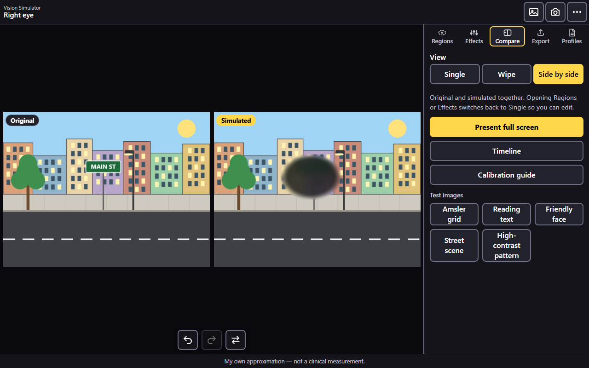
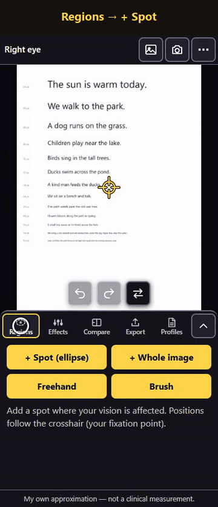
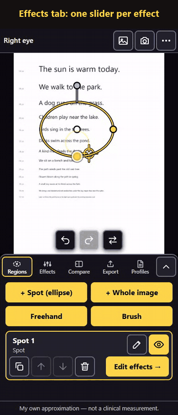
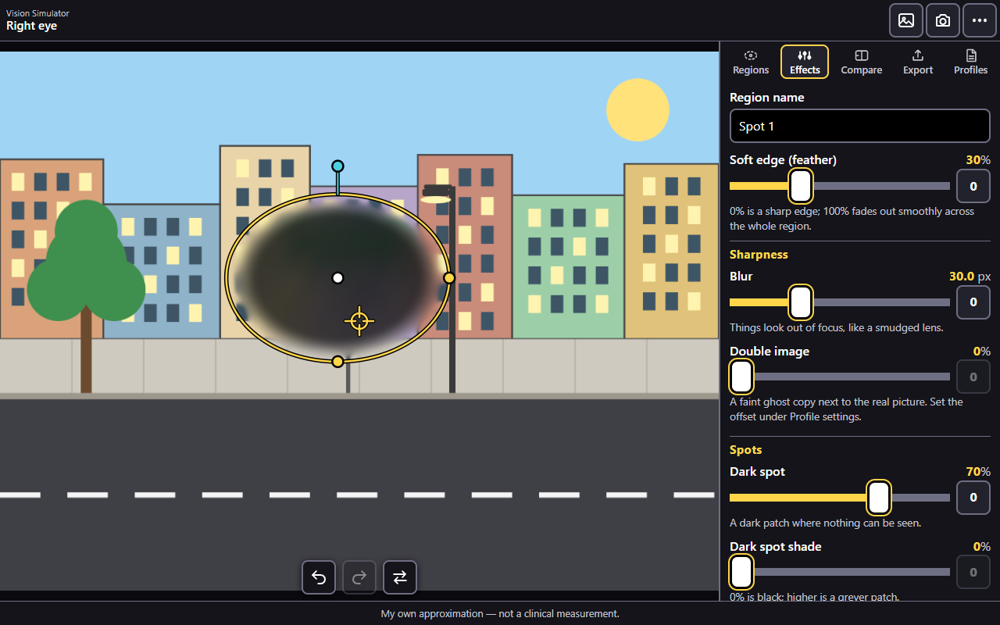
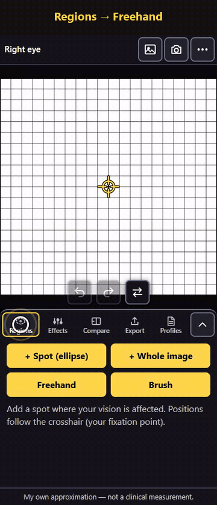
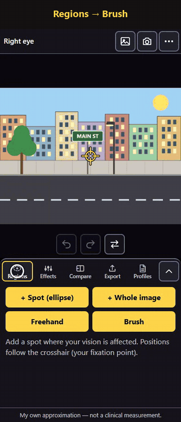
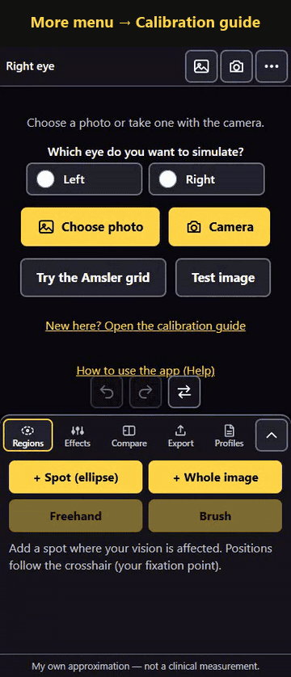
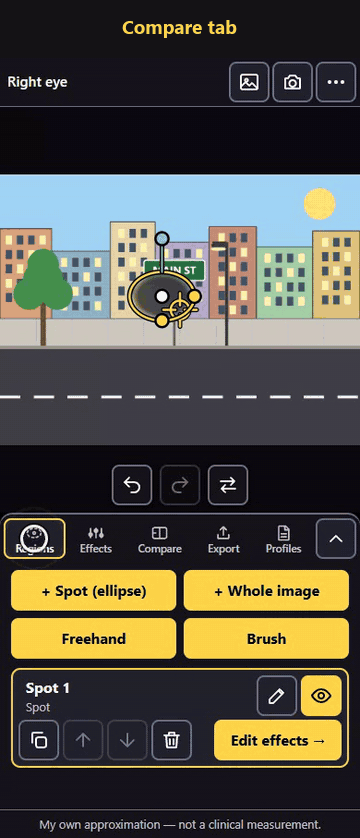
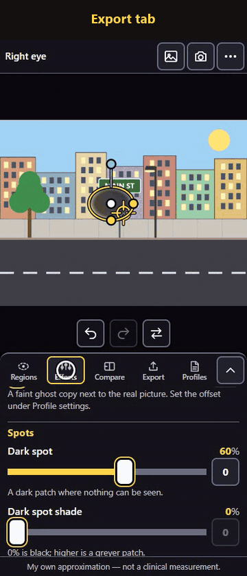
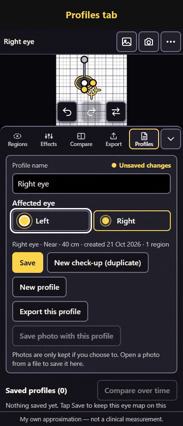

Show your doctor what your eye sees
Vision Simulator recreates, on any photo, what one affected eye sees: blur, dark or missing patches, wavy lines and more. You build the picture yourself, step by step, and show or send it to your doctor.

Contents
Quick start: five minutes
- Open a photoChoose a photo, take one, or try the Amsler grid.
- Add a spotRegions → + Spot, then tap where your vision is affected.
- Pick effectsEffects: move the sliders until it looks like what you see.
- Check itCover your good eye and compare. Tap Flip to switch between original and simulated.
- Share itExport → Prepare images → Share or Download.
Not sure what you see? Start with the calibration guide: it walks you through it, one eye at a time.
1Open a photo
Use a picture you know well, so that differences stand out. A page of text, a familiar face or a view from your window all work.
- Tap Choose photo to pick one from your gallery or files, or Camera to take one now. The same two buttons sit at the top right of the screen at any time.
- Or tap Test image and pick a built-in picture (no photo needed).
- The photo appears with a small crosshair in the middle. The crosshair is your fixation point: the spot your eye looks straight at. Every region you add is placed relative to it.
Built-in test images
Amsler grid
A square grid with a centre dot. Best for gaps and wavy lines; eye doctors use the same grid.
Reading text
Sentences from large to small print, each labelled with its size.
Friendly face
A simple face, for showing how faces look.
Street scene
Buildings, a tree, a lamp post and a street sign.
High-contrast pattern
Checkerboard and a star of wedges with strong edges.
Move around the picture
- Zoom: pinch with two fingers (phone), or use the mouse wheel (computer).
- Pan: drag with two fingers (phone), or drag with the mouse (computer).
- Reset: double-tap or double-click.
- Move the crosshair: drag it, or select it and use the arrow keys (hold Shift for bigger steps).
2Mark the affected area with a spot
A region is an area of the picture where your vision is different. The quickest region is a spot (an oval).
- Open the Regions tab and tap + Spot (ellipse).
- Tap the picture where your vision is affected. The spot appears there, with a yellow outline.
- Shape it with the dots:
- White dot (middle): drag to move the spot.
- Yellow dots: drag to make it wider or taller.
- Blue dot: drag around to rotate it.
- Tap Edit effects → (or the Effects tab) to decide what happens inside the spot.
+ Whole image adds a region that covers everything, for problems that affect the whole view (for example an overall haze or dimness).

3Choose the effects
Each region has its own effects. Select the region (tap it in the Regions list), open Effects, and move the sliders. The picture changes as you slide.
- Start with the effect that matters most to you, for example Blur or Dark spot.
- Move its slider until it looks like what your eye sees. Small steps are easier to judge.
- Add other effects if needed. Effects can be combined.
- Tap the Flip button (the two arrows under the picture) to switch between the original and the simulated view. The label Original shows while you look at the unchanged photo.
The current value is shown above each slider. The small 0 button at its right end resets that effect. On a computer you can also click a slider and use the arrow keys for fine steps.

What each effect does
| Effect | What you see | Use it when… |
|---|---|---|
| Blur (0–100) | Things look out of focus, like a smudged lens. | Detail is hard to make out. |
| Double image | A faint ghost copy next to the real picture. | You see edges twice. Set where the ghost sits under Profile settings. |
| Dark spot | A dark or grey patch where nothing can be seen. | Part of the view is blocked by a shadow. Use Dark spot shade (right below it) to choose black or grey for this region. |
| Missing area | A gap that the brain fills in with the surroundings, so no dark patch shows. | Things vanish but you don't see a dark patch, e.g. letters missing from a word. |
| Distortion | Straight lines look wavy or bent. | The Amsler grid lines look curved. |
| Size change | Objects look smaller (minus) or bigger (plus) inside the spot. | One eye sees things a different size. Works on spots (ovals) only. |
| Contrast loss | A washed-out, foggy look. | Things look faded, as if through mist. |
| Dimming | Everything looks darker. | The area looks like it's in shadow. |
| Colour fade | Colours look weaker and greyer. | Colours look less bright with that eye. |

Soft edge (feather)
Real vision problems rarely have a sharp border. Soft edge fades the effect out towards the edge of the region: 0% is a hard edge, 100% fades across the whole region.
Profile settings (all regions)
Under Profile settings at the bottom of the Effects tab are settings shared by every region:
- Distortion wave size, Wave direction and Max distortion: how the waviness looks.
- Ghost offset (sideways and up/down): where the double image sits.
- Viewing distance: how far your eye is from the screen (see calibration).
4Freehand outline
When the affected area isn't an oval, draw its outline.
- In Regions, tap Freehand. The banner says Draw around the area.
- With one finger (or the mouse), draw around the area in one go and let go. The outline closes itself.
- To adjust it: drag inside the shape to move it, or drag the white dots to reshape it.
- Open Effects and choose what happens inside the outline.
Changed your mind while drawing? Tap Cancel in the banner.

5Brush: paint patchy areas
For scattered or patchy areas, paint them.
- In Regions, tap Brush. The banner says Paint with one finger.
- Choose Paint, set the Brush size and Softness, and paint over the picture.
- Painted too much? Choose Erase and paint over it again.
- Tap Done, then pick the effects in Effects.
A coloured tint shows where a brush region applies while you edit it. To paint more later, select the brush region and tap Paint or erase.

6Manage regions
Every region is listed in the Regions tab. Tap a region to select it (its outline turns yellow). Each row has buttons to:
Rename
The pencil. Give regions names you will recognise, e.g. "Centre blur".
Show / hide
The eye. Hide a region to see the picture without it, without deleting it.
Duplicate
Copies a region with its effects.
Move up / down
Changes the order when regions overlap.
Delete
The bin. You can still bring it back with Undo.
Undo and Redo sit under the picture, next to Flip. On a computer, Ctrl+Z undoes and Ctrl+Y (or Ctrl+Shift+Z) redoes.
7Calibrate with your own eye
The calibration guide helps you notice what your affected eye sees and copy it into the simulation. Open it from the ⋯ menu (top right) → Calibration guide, or from the Compare tab.
- Set up. Pick a test image (the Amsler grid is best for gaps and waviness) and enter your viewing distance: how far your eye is from the screen. Sit in good, even light and hold the phone steady.
- Look with your affected eye. Cover your good eye (don't press on it), stare at the centre dot and notice what looks wrong: blurred, dark, missing, wavy, smaller or larger, faded, doubled. Write it down in the box if you like.
- Switch eyes and match. Now cover the affected eye and look at the simulation with the good eye. Tap Start adjusting and change regions and effects until the simulation matches what you noted.
- Check with Flip. Flip between original and simulated, and look again with the affected eye. Keep adjusting until the two feel alike.
- Tips for next time. Use the same distance and the same test image each time, so later check-ups compare fairly.
Keep sessions short. Judging with one eye covered is tiring; rest and look again another day if you're unsure.

8Compare and present
The Compare tab has three ways to look at the result:
- Single: one view at a time; use Flip to switch.
- Wipe: drag the divider across the photo. Original on the left, simulated on the right.
- Side by side: both at once. (Opening Regions or Effects switches back to Single so you can edit.)
Present full screen
- Tap Present full screen. Everything else disappears and the screen stays on.
- Tap the picture to switch between original and simulated, or choose Wipe to drag between them.
- Tap Exit when done.
This is the easiest way to show the doctor your phone during the appointment.

9Save and share images
Send the result to your doctor before the appointment, or keep it for your records.
- Open the Export tab.
- Under What to save, tick Simulated, Original and/or Side by side.
- Check the caption: date, viewing distance, eye, profile name and an optional note are printed under the image.
- Tap Prepare images. A preview of the side-by-side image is shown.
- Tap Share to send them with WhatsApp, email and so on, or Download to save them.
Options
- Format: PNG (best quality, the default) or JPEG (smaller files, with a quality slider).
- Export size: Up to 4096 px (default) makes very large photos smaller; Full resolution keeps them full size but is slower. If the device can't manage it, a smaller image is saved and you are told.
- Side-by-side layout: Auto, Horizontal or Vertical; with or without "Original" / "Simulated" labels.
- Caption under the image: can be switched off. The line "My own approximation — not a clinical measurement" is always added.

10Profiles and check-ups over time
A profile is your eye map: the regions and effects for one eye, with its viewing distance. Save it so you can come back to it, and save a new check-up each time things change.
- Open the Profiles tab.
- Choose the affected eye: Left or Right. The profile name follows the eye ("Left eye") unless you rename it.
- Tap Save. It is kept on this device only.
- At a later check-up, tap New check-up (duplicate): a dated copy you can adjust, so the earlier one stays as it was.
- Tap Compare over time (or Compare → Timeline) to see your saved check-ups side by side, by date.
Also in Profiles
- Saved profiles: open, duplicate, export or delete any saved profile.
- Save photo with this profile: photos are only kept if you choose to.
- Export this profile / Export all / Import JSON: move your profiles between your phone and computer as a small file (no photos inside unless saved with them).
- New profile: start again from an empty map (asks before discarding unsaved changes).

11Settings and extras
Text size
A− / A+ make all text in the app smaller or larger.
Test image
Load a built-in test image at any time.
Help
Opens this page.
Performance
How long each preview frame takes. Under 50 ms feels smooth.
Default eye
The eye new profiles start with.
Default viewing distance
Near (reading) 40 cm, Computer 70 cm, Far 300 cm, or your own value.
12Install the app and use it offline
Vision Simulator is a web app: it opens in your browser, and can be installed like a normal app.
- Android (Chrome): tap Install app when it is offered, or open the browser menu (⋮) → Install app / Add to Home screen.
- Computer (Chrome or Edge): click the install icon in the address bar, or the browser menu → Install Vision Simulator.
- iPhone (Safari): Share → Add to Home Screen. iPhone support is best effort.
After the first visit the app works without internet. When the message Ready to work offline appears, everything has been stored. When an update is available, the app asks before reloading.
Tips for the appointment
- Make the simulation at the distance you normally read or use the phone, and keep that distance the same each time.
- Use the Amsler grid for the check-up and a familiar photo to show everyday impact (reading, faces).
- Send the side-by-side image before the visit, and bring the phone with Present full screen ready.
- Save a New check-up each time; the timeline shows the doctor how things changed.
- Write what you noticed in the note: it is printed on the exported image.
Questions and problems
Is my photo uploaded anywhere?
No. All processing happens on your device; the app has no server and sends nothing. Photos leave the device only when you share or download an image yourself.
The picture doesn't change when I move a slider
Make sure a region is selected (Regions tab) and that it is visible (the eye button). Check that you are not looking at the Original (tap Flip). If a message says the live simulation isn't running, your browser may have WebGL switched off; try an up-to-date Chrome or Edge.
Will my saved profiles stay?
They are kept in your browser's storage on this device. Clearing the browser's site data removes them, so use Export all in Profiles now and then to keep a backup file.
Why does the simulation depend on viewing distance?
The same blur looks stronger on a small screen held far away than on a large screen close by. The viewing distance is printed on exported images so the doctor knows how they were made.
Size change is greyed out
Size change works on spots (ovals) only, not on freehand, brush or whole-image regions.
Saving or sharing is slow, or the image is smaller than expected
Very large photos take longer, especially with Full resolution. If the device runs out of memory, a smaller image is saved and the app tells you. Choosing Up to 4096 px is faster.
Can it diagnose my eye condition?
No. It is a communication aid only: your own approximation of what you see. Always follow your eye doctor's advice and tests.